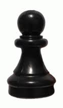
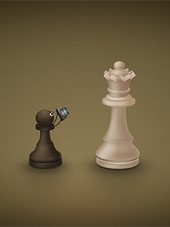
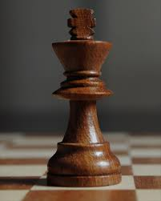
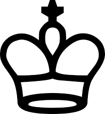
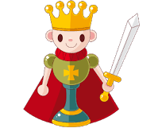
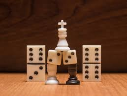

| Jugar |
| Piezas |
| Fotos |
| Jugadores |
| videos |
| Los controles de tiempo en ajedrez nacen de la necesidad de evitar que los jugadores tarden demasiado en reflexionar sus jugadas, algo muy común hasta finales del siglo XIX. En partidas amistosas, el ritmo de juego es normalmente acordado por los jugadores, que pueden decidir si utilizan un reloj o no. |
El ajedrez no es un juego de azar, sino un juego racional, ya que cada jugador decidirá el movimiento de sus piezas en cada turno. El desarrollo del juego es tan complejo que ni siquiera los mejores jugadores (o los más potentes ordenadores existentes) pueden llegar a considerar todas las posibles combinaciones: aunque el juego solo pueda desarrollarse en un tablero con solo 64 casillas y 32 piezas al inicio, el número de diferentes partidas que pueden jugarse excede el número de átomos en el universo
|  |  |  |
|---|
|  |
|---|
|  |
|  |
Todos los derechos reservados para Carlos Alberto Sagastizado.